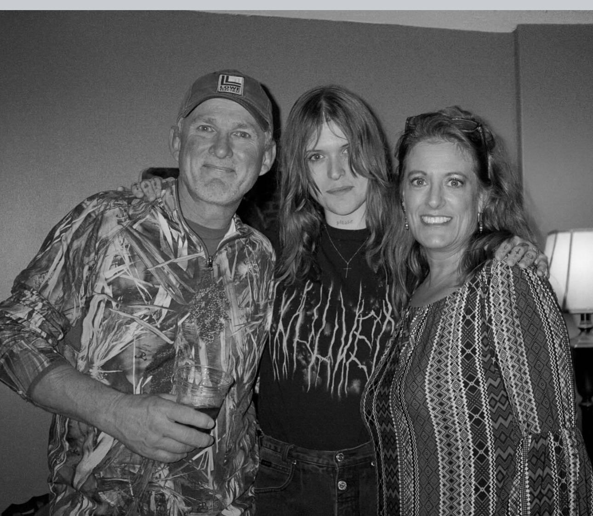
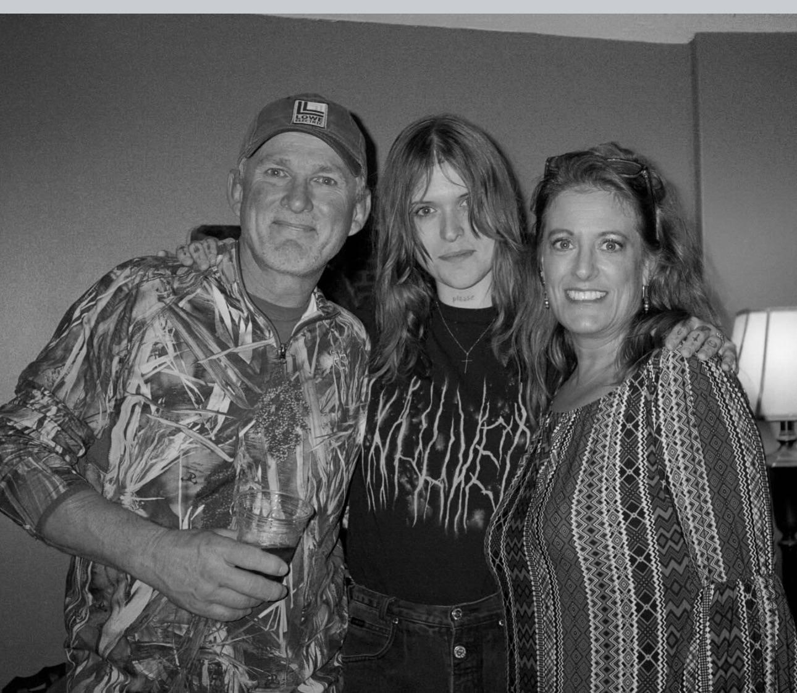

Introduction: A visual prelude of Preacher's Daughter
Hayden Anhedönia (a.k.a. Ethel Cain)
 

Hayden Silas Anhedönia (a.k.a. Ethel Cain) is an American singer-songwriter and musician.
She was born on March 24, 1998 in Tallahassee, Florida, U.S. She is known for a unique south-gothic
and ambient music style. She was raised in a sothern baptist family, her father was a deacon.
Anhedönia started making music in 2017, experimenting with various music styles and monikers,
She was originally known as 'White Silas' and made 'bedroom pop' demos,
posting them on both Tumblr and Soundcloud, though the former is not currently associated
with her anymore.
Anhedönia came out as gay to her family when she was 12 and subsequently, on her 20th birthday, came
out as a transgender woman. The moniker Ethel Cain was derived from the biblical figure of Cain
and Hayden's desire to have a 'woman, matronly and old american name'.
About Preacher's Daughter
Preachers Daughter is meant to be part of a 3-part series exploring the intergenerational
trauma in the fictional cain family, through the lens of women in the family. Preachers Daughter
explores the life of Ethel Cain, other parts explore Ethel's Mother, Vera Cain and Ethel's
Grandmother. As of now, the other parts are unreleased.
The album is mainly about Ethel's
religious and intergenerational trauma, 'Preacher's Daughter's is set in 1991 in Shady Grove, Alabama,
it covers Ethel's life, from growing up as the town's preacher's daughter, grappling with her Christian
religion and finding lover after lover, to eventually being forced into prostitution by one of her lover's.
After Ethel escaped from prostitution, her lover found her, killed and cannibalized her.
Hayden stated that Ethel's story has parallels to her own, she describes 'Preacher's Daughter'
as what would have happened if her life was different. During the deep dive,
I may reference some album occurrences to Hayden's life.